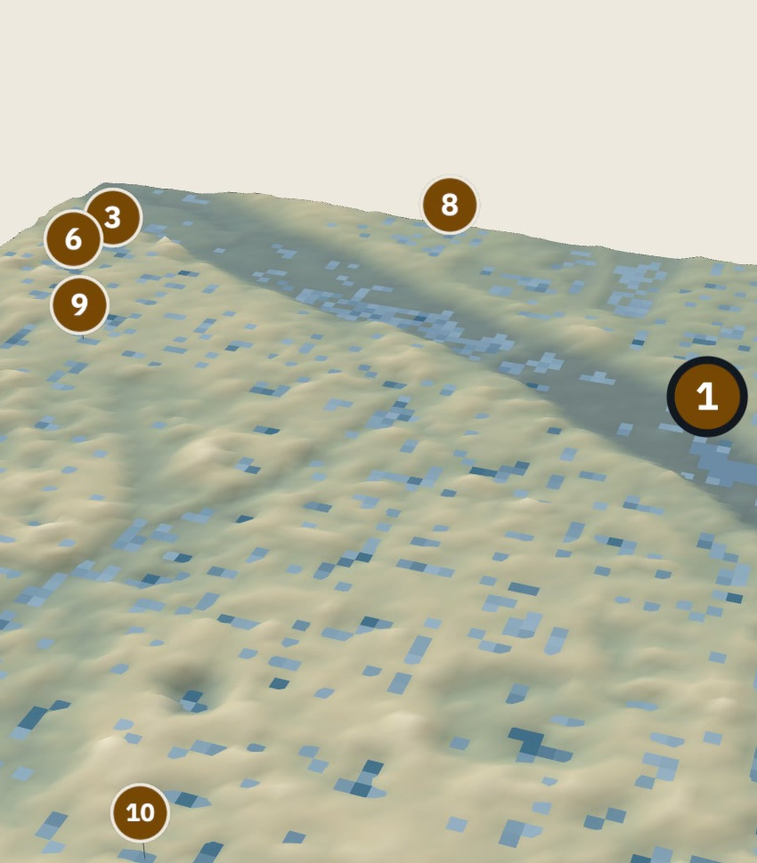
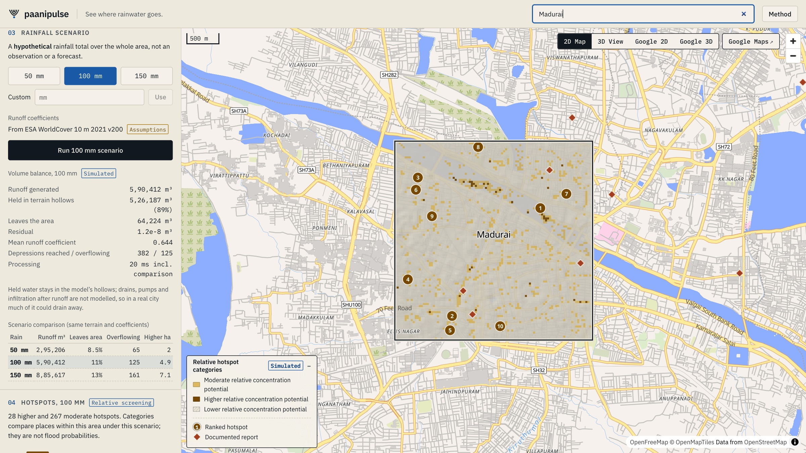
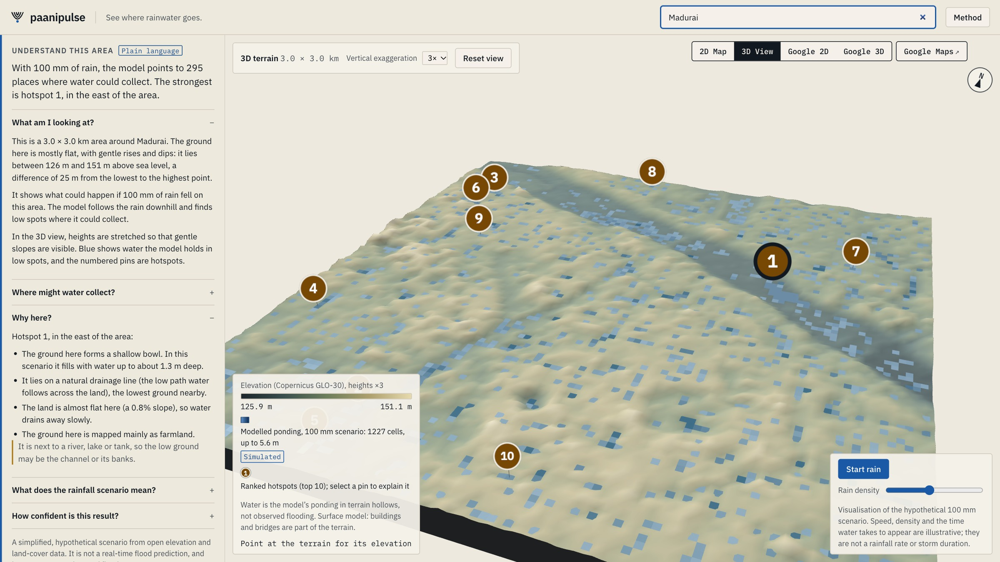
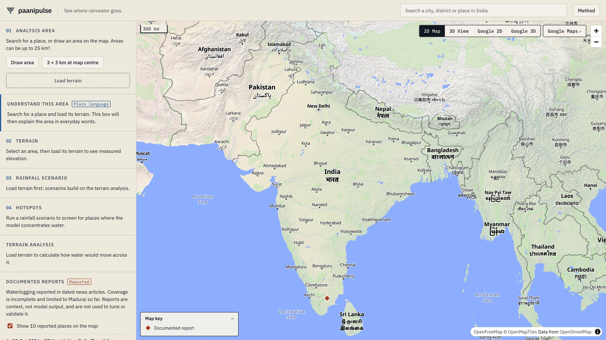
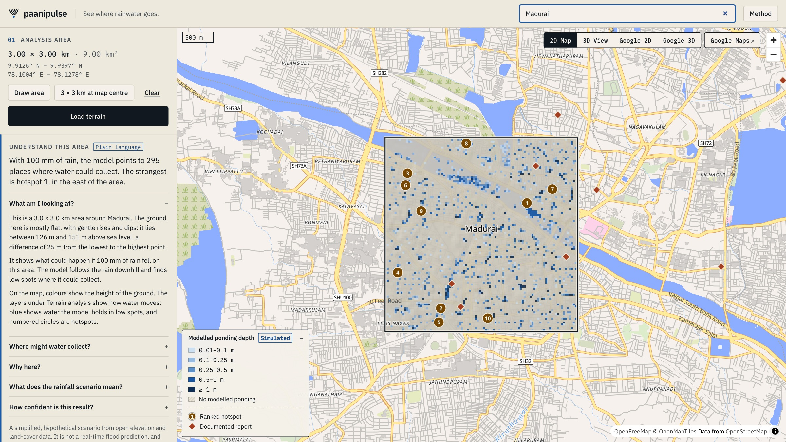
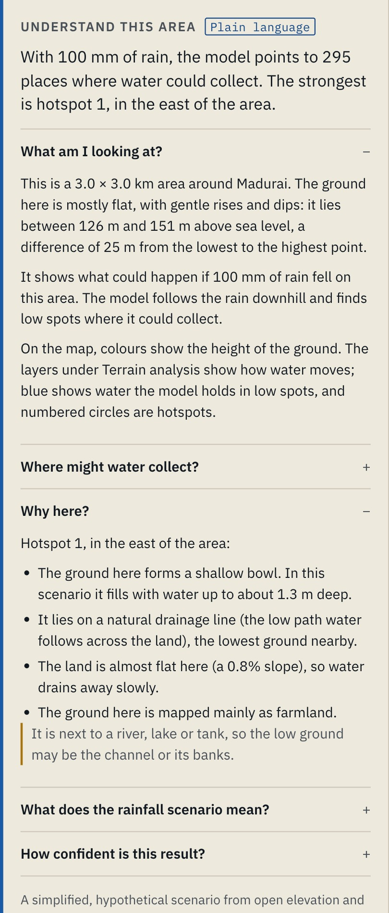
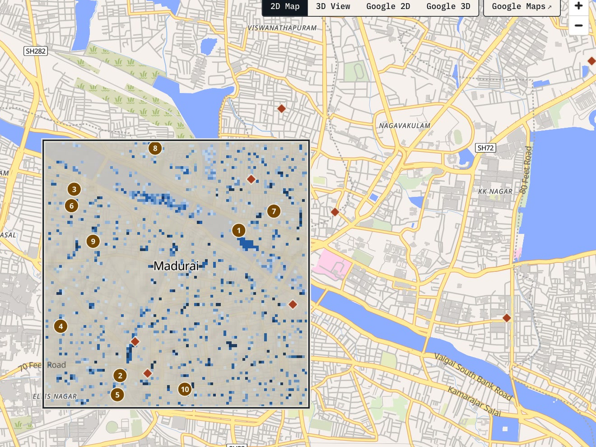
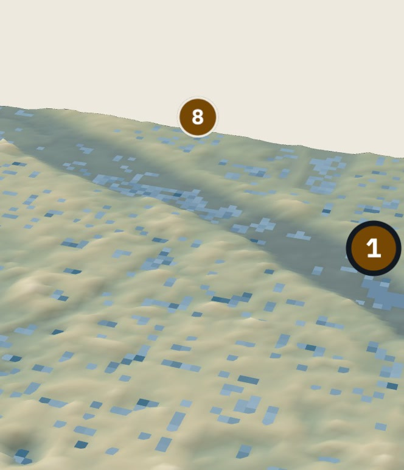

See where rainwater goes.
India-wide terrain and rainfall scenario explorer, running entirely in the browser.
The problem
Every monsoon, Indian cities take heavy rain. The same rainfall depth can leave one street dry and another under water, because the ground directs the flow.
Water runs downhill along the steepest path available.
Small height differences decide which way an area drains.
Low spots with no outlet are where water can gather.
Without terrain context, a rainfall number cannot show where water may collect.
The solution

Live app · Madurai, 3 × 3 km, hypothetical 100 mm scenario, hotspot layer
How it works
Search a place or draw an area up to 25 km².
bundled gazetteer · Photon · NominatimOnly the bytes covering the area are read from cloud-optimised GeoTIFFs.
Copernicus GLO-30 · ESA WorldCover 2021Fill hollows, route flow cell to cell, accumulate upslope area, measure HAND.
Web Worker hydrology engineA hypothetical total spread evenly over the area.
50 · 100 · 150 mm or customRunoff by land cover, then fill-and-spill through the hollows with a full volume balance.
rational-method coefficients2D map, 3D terrain, ranked hotspots and a plain-language explanation.
MapLibre · Three.jsThe technology
Product experience

3D View (Three.js): real GLO-30 heights ×3, modelled ponding, hotspot pins

India-wide search and map

2D MapLibre: modelled ponding

Understand this area
The analysis in action · Madurai

Modelled ponding depth, hypothetical 100 mm · 99 × 99 cells of about 30 m
Simulated · hypothetical scenario
More rain, more water held
Why hotspot 1 ranks first (5 of 7 points, "higher")
Reliability and limitations
Impact and future scope

Understand the terrain.
Understand the water.
See where rainwater goes.